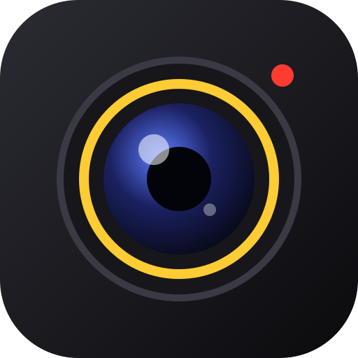

برای دیدن تصویر دوربین داخل برنامه، فقط اجازه دوربین لازم است. میکروفون فقط وقتی خودت روشنش کنی درخواست میشود.
در حال ضبط… برای روشن شدن صفحه دو بار ضربه بزن
عکسها و ویدیوها داخل حافظه همین برنامه روی دستگاه خودت ذخیره میشوند. برای انتقال به گالری گوشی/تبلت روی «ذخیره در دستگاه» یا «اشتراکگذاری» بزن.
هنوز چیزی ثبت نشده.
در حال آمادهسازی…